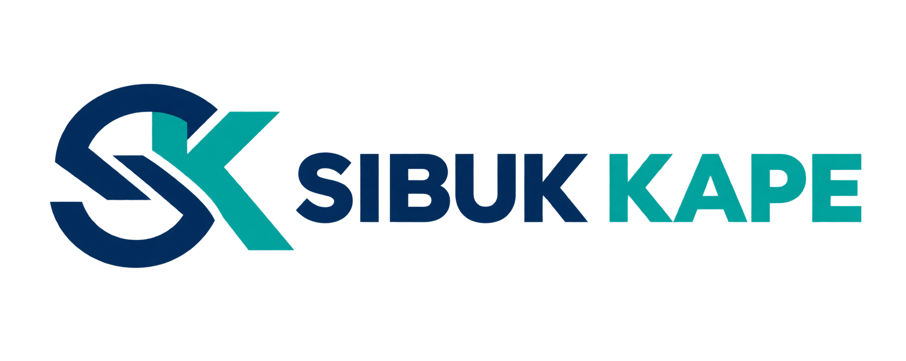
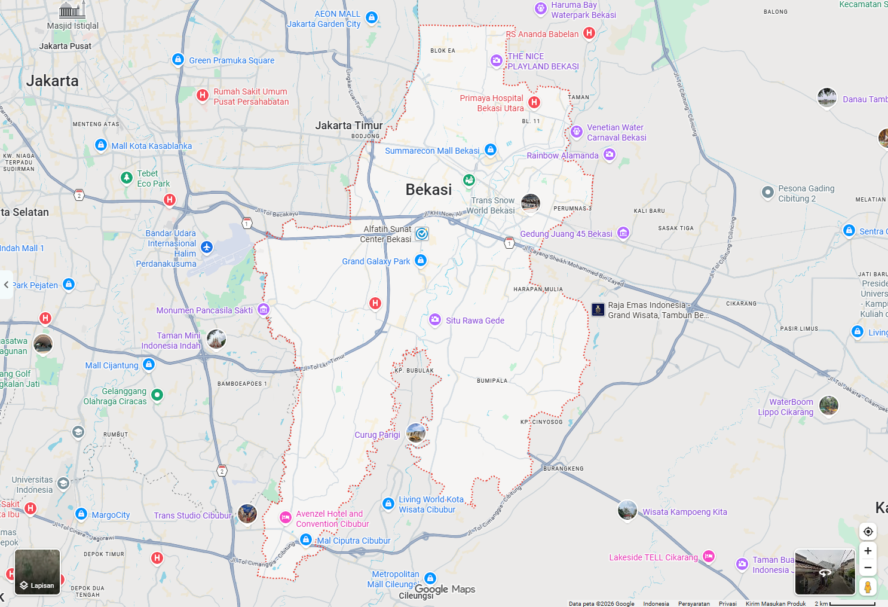

Open Node Map
Peta keterbukaan data
1 · WA Bot
2 · Koordinator
3 · Peta Publik
Data demonstrasi

Sibuk Kape
Zenial · Nadhirah · Qoulan

Bekasi · pemantauan operasi node hari ini
⚡
Titik Hilir PSEL · 5,6 ha
Ciketing Udik, Bantargebang
Koordinat: −6,3520; 106,9898
Aktif
Tidak aktif
Perlu atensi
PSEL